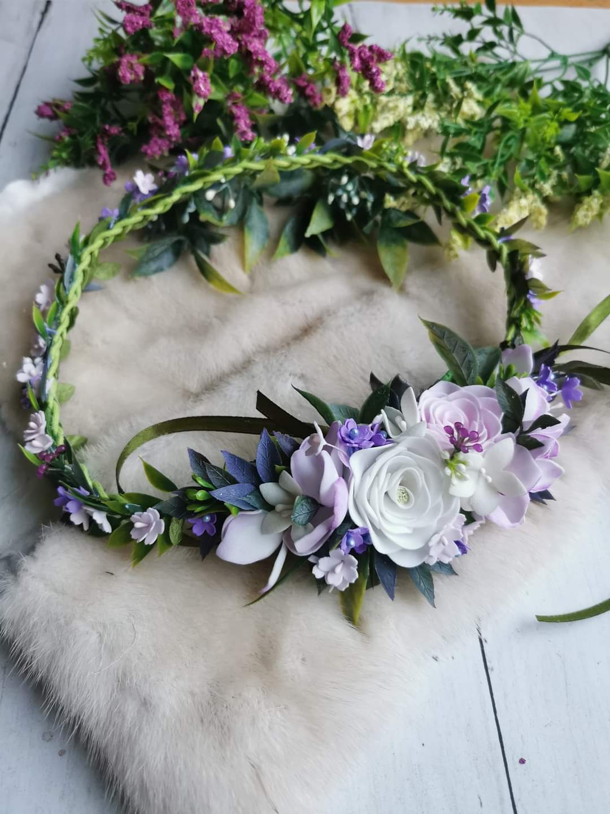

I am Yulia and i'm a mother of 2 kids and when i gave birth to my daughter i wanted to make accesories for her. The people i knew liked it so i decided to make it for other kids too. After i also started making accesories for adults. I was creative from my childhood and finished art school. Now i have a lot of customers and even make accesories wor weddings. Every wedding photo with a happy bride makes me happy.
Polish 